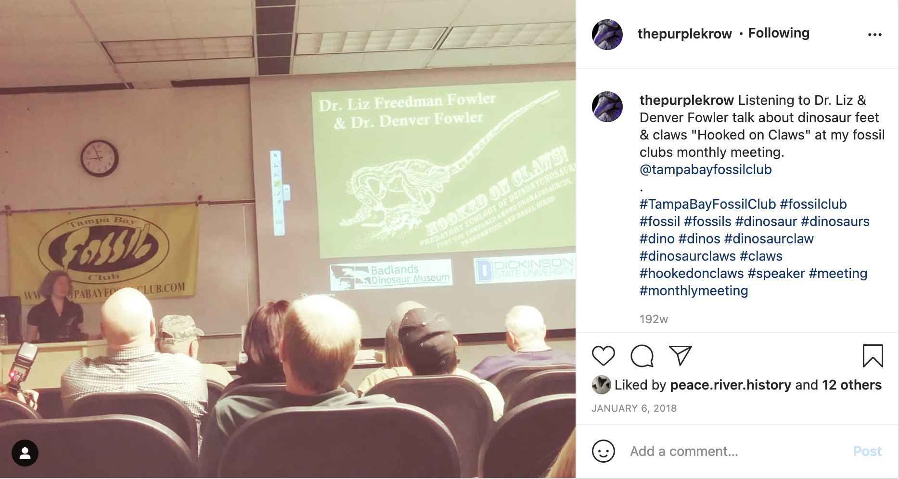

Join Us!
The Tampa Bay Fossil Club is a family oriented organization focused on paleontology, archaeology, and the natural sciences in general. Meetings are held monthly September - May at the University of South Florida and feature prominent speakers from many areas of science.Only club members can particpate in most field trip events and will receive a monthly club newsletter either through e-mail or snail mail. Club members may also request to join the Club's Facebook Group page.
The Tampa Bay Fossil Club awards two annual scholarships to University of South Florida students working in the field of paleontology and geology. The 30+ year old club hosts numerous field trips and gatherings through the year.
Family Membership ($28): Head of household and their spouse or significant other living at the same address, or Head of household, their spouse or significant other, and all children living at the same address under 18 years old.
Single Membership ($22): Anyone 18 years of age or older.
Student Membership ($15): Full-time student in college, trade school, etc. 18 years old or older.
International Membership ($45): Anyone living internationally (requires special packaging and extra postage).
Membersip Application:
Please print and use the following form to join us! Include check or money order (do not send cash) and return to:
Tampa Bay Fossil Club
P.O. Box 280447,
Tampa, FL 33682-0447
CLICK HERE TO GET THE FORM (as a PDF)
You can also sign up at the next meeting and guests are always welcome.

An Example of one of our Monthly Club Meetings!